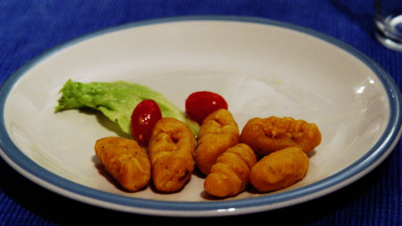

| Zutaten für 4 Personen: | |
| 50 g | Butter |
| 400 g | Kürbis, geraffelt |
| 250 g | Gorgonzola, gewürfelt |
| Salz | |
| Pfeffer | |
| 400 g | Mehl |
Kürbis schälen und raffeln.
Butter schmelzen. Den geraffelten Kürbis mit wenig Wasser weich dämpfen, bis ein Mus entsteht.
Den gewürfelten Gorgonzola beigeben und mit dem Mus verschmelzen. Mit Salz und Pfeffer nach Belieben abschmecken.
Mehl darunter sieben, zu einem glatten Teig verarbeiten.
Auf bemehlter Fläche ca. 2 cm Würste bilden, ca. 3-4 cm lange Gnocchi schneiden.
In genügend kochendem Salzwasser kochen, bis sie aufsteigen, mit Salbeibutter abschmecken, heiss servieren.
Fenner's Kürbisrezepte, Herbert Eigenmann, Code: KÜN
Schmeckte am 13.12.2004 ganz gut. Den Kürbis zu raffeln ist wohl blöd ohne Maschine.
@LINKBACK_TAG@ @WAKELOCK@